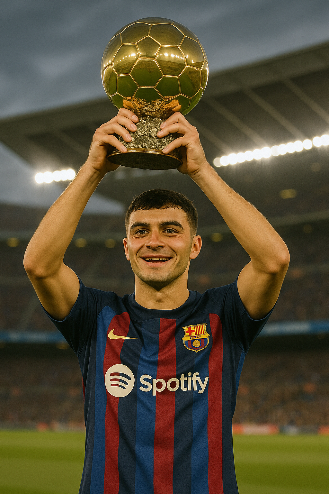

Raphinha – Játékosstatisztikák
(2024/25 – FC Barcelona)
- Mérkőzések száma: 54
- Gólok: 6
- Gólpasszok: 7
- Lejátszott percek: 3881 perc
- Sárga lapok: 2
- Piros lapok: 0
- Passzpontosság (BL-ben): 89%
- Legnagyobb sebesség (BL-ben): 31,43 km/h
- Összesített védekező akciók (labdaszerzések): 227
🇪🇸 La Liga (2024/25)
- Mérkőzések: 33
- Gólok: 4
- Gólpasszok: 4
- Lejátszott percek: 2586 perc
- Sárga lapok: 2
- Piros lapok: 0
Bajnokok Ligája (2024/25)
- Mérkőzések: 13
- Gólok: 0
- Gólpasszok: 2
- Lejátszott percek: 1012 perc
- Passzpontosság: 89%
- Legnagyobb sebesség: 31,43 km/h
- Sárga lapok: 0
- Piros lapok: 0
